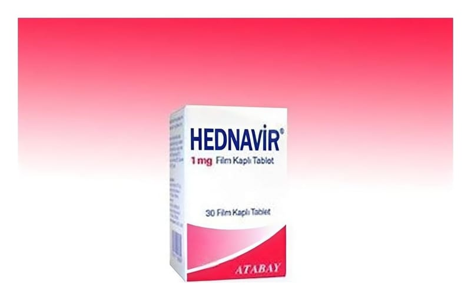

Hednavir 1 mg Film Tablet, 30 Adet

Ne için kullanılır
KT · Bölüm 1HEDNAVİR antiviraller olarak adlandırılan bir ilaç grubuna dahildir. HEDNAVİR, erişkinlerde kronik (uzun süreli) hepatit B virüsü (HBV) enfeksiyonunun tedavisinde kullanılır. HEDNAVİR karaciğeri hasar görmüş fakat halen düzgün şekilde işlev gösteren (kompanse karaciğer hastalığı) kişilerde ve karaciğeri hasar görmüş ve düzgün şekilde işlev göstermeyen (dekompanse karaciğer hastalığı) kişilerde kullanılabilir. HEDNAVİR ayrıca vücut ağırlığı en az 32,6 kg olan çocuklar ve ergenlerde kronik (uzunsüreli) HBV enfeksiyonunu tedavi etmek için kullanılır. HEDNAVİR, karaciğeri hasar görmüş ancak hala düzgün çalışan (kompanse karaciğer hastalığı) çocuklarda kullanılabilir. HEDNAVİR 1 mg film kaplı tabletlerin her biri etkin madde olarak 1 mg entekavire eşdeğer 1,065 mg entekavir monohidrat içerir.
Sayfa 2 / 7
HEDNAVİR, somon renkte, bikonveks, film kaplı tabletler halindedir. Her kutuda 30 tablet vardır. HEDNAVİR, erişkinlerde hepatit B virüsü (HBV) enfeksiyonunun tedavisinde kullanılır. Hepatit B virüsünün neden olduğu enfeksiyon, karaciğerinize zarar verebilir. HEDNAVİR vücudunuzdaki virüs miktarını azaltır ve karaciğerinizin durumunu iyileştirir.